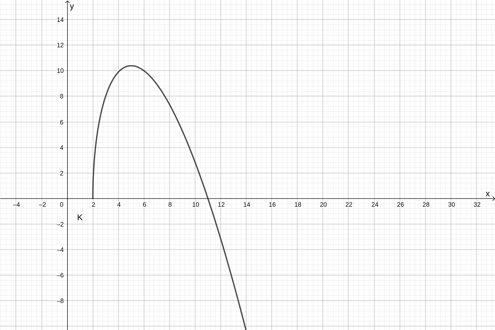

Oppgaveløsninger
Innhold
Heldagsprøver og eksamener
Eksamen - høsten 2018
Del 2 - Oppgave 1
Her er det mange minutter med klabb og babb midt i. Jeg beklager.
Del 2 - Oppgave 2
Del 2 - Oppgave 3
Del 2 - Oppgave 4
Sinus R1
8.183
- a
- Tegn grafen til \[\vec{r}(t) = [t^2 + 2, 9t - t^3]\]
- b
- Finn en parameterframstilling for tangenten \(T\) i det punktet på grafen som svarer til \(t = 1\).
- c
- Et annet punkt på grafen til \(\vec{r}\) har en tangent som er parallell med tangenten til \(T\). Finn en parameterframstilling for denne tangenten.
Løsning
Tegner grafen til \(\vec{r}\) ved å bruke Kurve-kommandoen i Geogebra. Valgte her å tegne \(\vec{r}(t)\) for \(t\) -verdier \(t\in [0, 10]\)

Finner først \(\vec{r}(1) = [3, 8]\), altså skal linja gjennom punktet \((3, 8)\). En retningsvektor for linja, kan finnes som fartsvektoren til \(\vec{r}\), dette kan vi gjøre ved å deriver. \(\vec{r}'(t) = \vec{v}(t) = [2t, 9 - 3t^2]\). evaluert i \(t=1\) gir dette \(\vec{v}(1) = [2, 6]\).
en parameterframstilling for tanten med retningsvektor \(\vec{v}=\) gjennom punktet \((3,8)\) i punktet er da \[T : \begin{cases} x(t) = 2t + 3 \\ y(t) = 6 t + 8 \end{cases},\] hvor koeffisientene 2 og 6 er hentet fra \(\vec{v}(1)=[2,6]\) og konstantleddene 3 og 8 er hentet fra punktet linja skal gjennom, \((3,8)\).
vi ønsker å finne en verdi for \(t\) som gjør at \(\vec{v}(t) = k \cdot [2, 6]\). altså er \[\begin{align} 2t &= 2k \\ 9 - 3 t^2 &= 6k \end{align}\]
da er \(6k = 6t\), og får \(9 - 3 t^2 = 6t\). vi skal da løse \[\begin{align} &3t^2 + 6t - 9 = 0 \\ &t = \frac{-6 \pm \sqrt{6^2 - 4\cdot 3\cdot (-9)}}{2\cdot 3} \\ &t = \frac{-6 \pm \sqrt{144}}{6} \\ &t = -1 \pm 2 \\ &t = -3 \vee t = 1 \end{align}\]
\(t = 1\) er definisjonen på oppgaven, altså uinteressant, \(t = -3\) gir den nye parameterframstillinga.
Når \(t=-3\) får vi retningsvektoren \(\vec{v}(-3) = [-6, -18]\). Den nye tangenten skal gjennom punktet definert av \(\vec{r}(-3) = [11, 0]\), altså skal den nye tangenten gjennom \((11, 0)\).
Vi får da parameterframstillinga for den nye tangenten, \(K\), som da er parallell med \(T\), til å være \[K : \begin{cases} x(t) = -6 t + 11 \\ y(t) = -18 t \end{cases}\]
Vi har da løst oppgava.
Tillegg:
Vi kan gjøre den siste parameterframstillinga penere ved å se at størrelsen til retningsvektoren ikke har noe å si (vi har ikke fått noen spesifikke verdier for \(t\)). Vi kan da bruke at \([-6, -18] = -6\cdot [1, 3]\), altså at \([-6, -18]\) er parallell med \([1, 3]\), og heller bruke dette som retningsvektor.
Vi får da \[K : \begin{cases} x(t) = t + 11 \\ y(t) = 3t \end{cases}\] Dette kunne vi også gjort for \(T\).